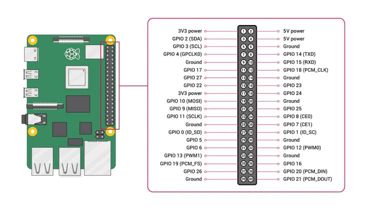

RTES913 - EOS - Overbug
Lab 2: GPIO Device-State Input
Turn physical Raspberry Pi controls into a device-state stream that drives one Overbug player on a PC.
Before you begin
This lab assumes you understand:
- the user-kernel boundary from Lab 1;
- Linux device files and
read(); - kernel module build, load, and unload commands; and
- active-low GPIO wiring with pull-up resistors.
By the end, you will expose a GPIO device state, transmit it over UDP, and verify it in Overbug.
System overview
The interface names below are the contracts between each stage. Your work is the two Raspberry Pi programs in blue.
1. Device-state interface
The driver reads six GPIO inputs that you choose and combines them into one six-bit device state. The lab wiring is active-low: a pressed control connects its GPIO line to GND.
Pin demo

- Choose six pins labelled
GPIO; do not use a 3.3 V, 5 V, or GND pin as a GPIO input. - Record each physical header position and its BCM GPIO number before wiring your controls.
- Configure the same six BCM GPIO numbers in your
driver.cmodule parameters.
State mask
#define OB_BTN_UP 0x01
#define OB_BTN_DOWN 0x02
#define OB_BTN_LEFT 0x04
#define OB_BTN_RIGHT 0x08
#define OB_BTN_ACTION 0x10
#define OB_BTN_SOLDER 0x20Text contract
Each successful read from /dev/overbug_buttons returns one ASCII line:
OBTN XX\n
XX is the two-digit hexadecimal device-state mask. For
example, UP plus ACTION is 0x01 | 0x10 = 0x11, so the
device returns:
OBTN 11\nPolling baseline
- Each
read()calculates and returns the current device state. reader.cchooses the sample rate with--hz; the default is 60 Hz.- If the reader buffer is too small for the complete line, the driver returns an error rather than a partial state.
- Lab 2 uses polling. A later extension can replace this with interrupt-driven delivery.
2. Network interface
The reader converts each sampled OBTN XX line into one
UDP input packet for the PC game server.
Reader command
./reader --server <PC_IP> [--device /dev/overbug_buttons] [--port 17666] [--player 1] [--hz 60]UDP contract
- The reader sends the current device state to UDP port
17666at its configured sample rate. magicis"OBIN"; this identifies an input packet.- Use
player_id1for Lab 2. The single-player server ignores other IDs. button_maskis the six-bit value parsed fromOBTN XX.
Packet layout
struct __attribute__((packed)) ob_input_packet {
char magic[4]; /* "OBIN" */
uint8_t player_id; /* 1 for Lab 2 */
uint8_t button_mask; /* device state */
};
This definition lives in overbug_protocol.h. Include that
header from both reader.c and server.c so
both programs always agree on the packet size and field order.
3. What you implement
The interfaces are provided by the lab. Your job is to make the student-owned files agree with both sides of each contract.
| Component | Read or receive | Write or send | Ownership |
|---|---|---|---|
driver.c |
Six active-low GPIO values | /dev/overbug_buttons as OBTN XX |
Student |
reader.c |
OBTN XX from the device |
UDP OBIN packet to the PC |
Student |
Makefile |
driver.c, reader.c, and the kernel build tree |
overbug_buttons.ko and reader build targets |
Student |
server.c |
UDP OBIN packet |
UDP OBST snapshot |
Provided |
display.py |
UDP OBST snapshot |
Overbug game window | Provided |
Driver checklist
- Follow the Section 3 API flow: define the six masks, request the configured GPIO lines, and clean them up safely.
- Create the
overbug_buttonsmisc device. - Release GPIO descriptors and unregister the device when the module unloads.
Reader checklist
- Parse the command-line server address, device path, port, player ID, and polling rate.
- Fill the shared
OBINpacket fields, then send it with UDP.
Makefile checklist
You must write a Makefile for your submission. It should
make the kernel module and user-space reader easy to build and clean.
make modulebuildsoverbug_buttons.kothrough the running kernel's build tree.make readercompilesreader.cinto thereaderprogram.make cleanremoves the module build output and thereaderexecutable.
4. Build and run
On the Raspberry Pi
Build the module, verify one device-state line, then start the reader:
cd Lab2
make module
sudo insmod overbug_buttons.ko
make reader
./reader --server <PC_IP> --player 1
The device test should print a line such as OBTN 00. Press
a control and run it again to confirm the expected bit changes.
On the PC or Ubuntu VM
Install pygame-ce if it is not already available, then start the display and server:
cd Lab2
gcc -std=c11 -Wall -Wextra -O2 -o server server.c -lm
python3 -m pip install pygame-ce
python3 display.py --host 0.0.0.0 --port 17667In a second terminal on the same PC or VM:
cd Lab2
./server --input-port 17666 --display-host 127.0.0.1 --display-port 17667Start the Raspberry Pi reader last. Its physical controls should now move or operate the one Overbug player in the display window.
Your Makefile targets
Before running these commands, create your own Makefile with the required targets:
make module
make reader
make clean5. QA
Questions
- What is a driver? Explain the relationship between GPIO, driver, driver table, device, and device table.
- Simply introduce the 40 pins on the RPi. Which pins do you use in this lab?
- Which GPIO APIs request, read, and release your GPIO pins?
- What is switch bounce, and how can a polling driver reduce it?
- What are the major and minor numbers of /dev/overbug_buttons, and how are they assigned?
- What other insights do you gain from this lab?